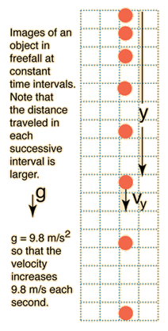
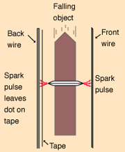
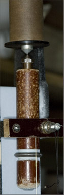
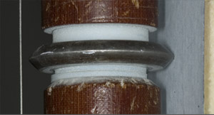

Freefall Experiment with Spark Timer
|

A 10,000 volt spark timer places spark dots on a waxed tape as an object falls freely. At right is a photo of the marks placed on the waxed tape. It is accompanied by an actual set of distance data measured from the spark locations. | 
|
|  |
The plot of the measured distance data above gives an impressive quadratic curve, just as the motion equations predict for a constant acceleration.
Taking differences between the measured distances in pairs and dividing by 1/60 second gives this velocity curve. It is generally a straight line as predicted by v=gt, but you can see deviations which we associated with a slight rocking motion of the bob as it falls.
Now taking differences between the calculated average velocities and dividing by 1/60 second gives a plot of the average acceleration as a function of time. It hardly looks like constant acceleration, but we have several excellent excuses. First, the raw measurement data has now been multiplied by 3600, accentuating any measurement uncertainties. Second, the rocking of the falling bob that became evident in the velocity plot above is further accentuated in the acceleration plot. But the rocking motion is periodic and tends to cancel out in the average value of the acceleration, and the average acceleration obtained from the 19 position measurement was 980.00 cm/s2! Compared to the standard value of g for Atlanta, which is 979.5 cm/s2, this value only deviates 0.05% from the standard value. Here we are reporting probably the best value we ever got, but the values from this experiment are usually between 960 and 1000 cm/s2, so it is a good freefall experiment.
|  | The bob is suspended from the pointed iron core of an electromagnet at the top of the sparking apparatus. |
|  | On the insulating bob has been placed a metal ring with a sharp edge. It fills most of the space between the front wire and the back wire positioned behind the waxed tape. The sharp edge concentrates the electric field and makes it easier for a spark to jump to the ring and from the ring to the back wire, passing through the tape to make the mark. |
| Freefall calculation |
| HyperPhysics***** Mechanics | R Nave |